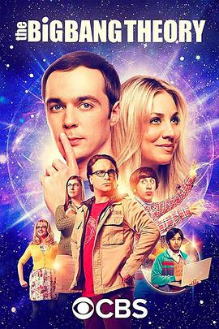

生活大爆炸 第十一季全集在线观看,百度云下载,磁力BT资源下载
《生活大爆炸 第十一季》

生活大爆炸 第十一季信息
导演: 马克·森卓斯基
编剧: 查克·罗瑞 / 比尔·布拉迪
主演: 吉姆·帕森斯 / 凯莉·库柯 / 约翰尼·盖尔克奇 / 西蒙·赫尔伯格 / 昆瑙·内亚 / 马伊姆·拜力克 / 梅丽莎·劳奇 / 凯文·苏斯曼 / 劳里·梅特卡夫 / 瑞琪·琳德赫姆 / 史蒂芬·霍金 / 贝丝·比厄 / 沃尔顿·戈金斯 / 比尔·盖茨 / 马克·哈米尔 / 凯西·贝茨 / 劳伦·拉普库斯 / Joseph Teller / 约翰·罗斯·鲍伊 / 布莱恩·波塞恩 / 威尔·惠顿 / 考特尼·海根勒 / 杰瑞·奥康奈尔 / 尼尔·盖曼
类型: 喜剧 / 爱情
制片国家/地区: 美国
语言: 英语
首播: 2017-09-25(美国)
季数: 123456789101112
集数: 24
单集片长: 20分钟
IMDb: tt6673774
生活大爆炸 第十一季简介
《生活大爆炸》正式获得续订第十一、十二季。
生活大爆炸 第十一季在线观看
第1集第2集第3集第4集第5集第6集第7集第8集第9集第10集第11集第12集第13集第14集第15集第16集第17集第18集第19集第20集第21集第22集第23集第24集
生活大爆炸 第十一季下载
- 生活大爆炸 第十一季第1集 BT下载 磁力下载 百度云下载
- 生活大爆炸 第十一季第2集 BT下载 磁力下载 百度云下载
- 生活大爆炸 第十一季第3集 BT下载 磁力下载 百度云下载
- 生活大爆炸 第十一季第4集 BT下载 磁力下载 百度云下载
- 生活大爆炸 第十一季第5集 BT下载 磁力下载 百度云下载
- 生活大爆炸 第十一季第6集 BT下载 磁力下载 百度云下载
- 生活大爆炸 第十一季第7集 BT下载 磁力下载 百度云下载
- 生活大爆炸 第十一季第8集 BT下载 磁力下载 百度云下载
- 生活大爆炸 第十一季第9集 BT下载 磁力下载 百度云下载
- 生活大爆炸 第十一季第10集 BT下载 磁力下载 百度云下载
- 生活大爆炸 第十一季第11集 BT下载 磁力下载 百度云下载
- 生活大爆炸 第十一季第12集 BT下载 磁力下载 百度云下载
- 生活大爆炸 第十一季第13集 BT下载 磁力下载 百度云下载
- 生活大爆炸 第十一季第14集 BT下载 磁力下载 百度云下载
- 生活大爆炸 第十一季第15集 BT下载 磁力下载 百度云下载
- 生活大爆炸 第十一季第16集 BT下载 磁力下载 百度云下载
- 生活大爆炸 第十一季第17集 BT下载 磁力下载 百度云下载
- 生活大爆炸 第十一季第18集 BT下载 磁力下载 百度云下载
- 生活大爆炸 第十一季第19集 BT下载 磁力下载 百度云下载
- 生活大爆炸 第十一季第20集 BT下载 磁力下载 百度云下载
- 生活大爆炸 第十一季第21集 BT下载 磁力下载 百度云下载
- 生活大爆炸 第十一季第22集 BT下载 磁力下载 百度云下载
- 生活大爆炸 第十一季第23集 BT下载 磁力下载 百度云下载
- 生活大爆炸 第十一季第24集 BT下载 磁力下载 百度云下载
生活大爆炸 第十一季热门短评
谢耳朵，一生推。
第一集开始就进入「边笑边哭」模式，提前五星预定，毕竟已正式加入「看一集少一集」系列。（PS：看完最后一集，爆哭）
前10季Rajesh是成长最少的主角。其余四人的性格、职业、生活方式都有巨大改变， 而Raj在克服选择性缄默之后就开启了无限迂回的“恋爱—分手—恋爱—分手…”模式。单独取第八季的一段出来放在第五季都不违和。 并不是说Raj的性格需要改进，只是观众对没有起伏的人物兴趣不大，...
谢尔顿·库珀与艾米·法拉·福勒结婚了。 对还在跟《TBBT》的诸位，这不算新闻；对完全不知道《TBBT》的诸位，这话没意义；所以这句话能产生影响的，也就是半跟半不跟，或者曾经跟过《TBBT》的诸位了。是的，谢尔顿·库珀结婚了。 当然本文的主题不在于此。 老跟的诸位也许有印...
如果我说，曾经我一度因为《生活大爆炸》这个名字而选择放弃，不知道有多少人会举手附和。 时至今日，我也依然不是很明白，《大爆炸》这个名字，到底是怎么回事。 看到过一种解释，因为主角们都是科学家，剧名则取自宇宙大爆炸。 这种解释大概会让看了这部剧的人会心一笑。 把...